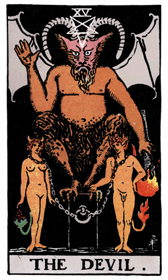

Our journey through the Rider-Waite Tarot Deck brings us to The Devil, a symbol of bondage, temptation, and the potential for liberation. In this card, a horned and winged figure stands atop a pedestal, with a male and female figure chained to it. The chains around their necks are loose, indicating that the bondage is self-imposed, and they could free themselves if they choose to do so.
The Devil's wings represent the illusion of entrapment, suggesting that individuals may feel bound by their own limiting beliefs or desires. The inverted pentagram on the Devil's forehead symbolizes the perversion of spiritual ideals, while the torch in his hand represents the deceptive allure of materialism and worldly desires.
The male and female figures chained to the pedestal represent the dualistic nature of human desires and the potential for bondage to materialism and base instincts. Despite the chains, their tails are intertwined, suggesting the intertwining of opposites and the possibility of transformation.
In a tarot reading, The Devil often emerges as a symbol of temptation, bondage to material desires, and the recognition of self-imposed limitations. It suggests a time for introspection, acknowledging unhealthy attachments, and embracing the potential for liberation and transformation.
The Devil challenges individuals to examine their beliefs, desires, and attachments that may be keeping them bound to a limited perspective. It invites a closer look at the aspects of life where one may feel enslaved and the recognition that freedom is within reach through conscious choices.
The loose chains around the necks of the figures indicate that liberation is possible, and individuals have the power to free themselves from self-imposed bondage. The Devil serves as a reminder that true freedom comes from breaking the chains of limiting beliefs and desires.
From a psychological perspective, The Devil represents the acknowledgment of personal shadows, the exploration of hidden desires, and the liberation from unconscious patterns. It signifies the importance of facing one's vulnerabilities and making conscious choices to break free from destructive habits.
In a reversed position, The Devil may indicate a release from bondage, overcoming temptations, or a successful confrontation of limiting beliefs. It could suggest a period of self-discovery and liberation from oppressive influences. In such cases, the reversed Devil serves as a symbol of empowerment and breaking free from self-imposed limitations.
Archetypally, The Devil aligns with the archetype of the Shadow—a figure that represents the hidden and repressed aspects of the psyche. Confronting The Devil symbolizes the integration of these shadow elements for personal growth and transformation.
Societally, The Devil encourages communities to examine societal norms and question oppressive systems. It emphasizes the importance of individual and collective liberation from structures that may restrict personal freedom and growth.
In conclusion, The Devil in the Rider-Waite Tarot Deck invites us to confront our self-imposed limitations, break free from unhealthy attachments, and embrace the potential for personal liberation. It encourages individuals to question societal norms and structures that may hinder personal and collective growth.